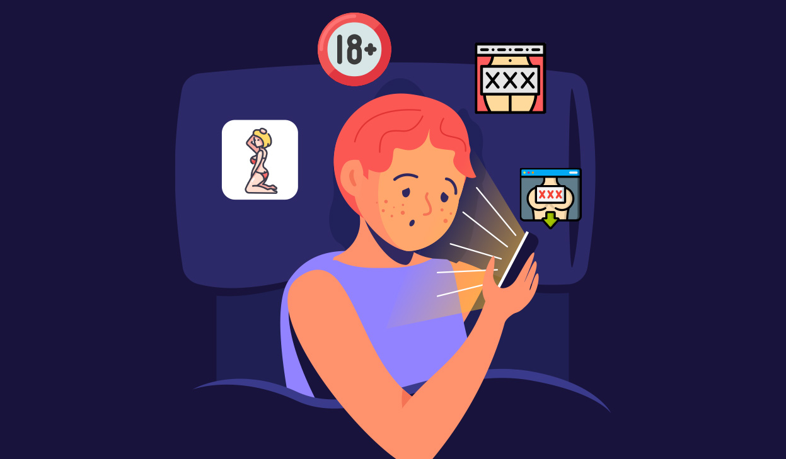
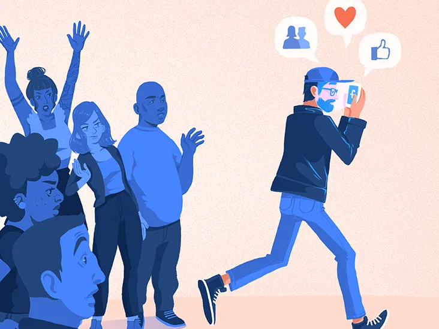

Internet addiction disorder or IAD is a broad term that describes an impulse control disorder characterized by
spending excessive amounts of time on the internet in chat rooms, on dating sites, scrolling through social media,
playing online games, watching YouTube videos, etc. Also called Problematic Internet Use (PIU), internet addiction
is characterized by hard to control, excessive use of, preoccupation with, or difficult to withstand urges to use
one's computer, smartphone, and internet.
It is also characterized by the experience of withdrawal symptoms when
the user loses access to online activities. The behavior continues despite impairment and negative consequences.
Problematic use of the internet comes in many forms, from excessive internet gaming to computer use that facilitates
pathological gambling. Regardless of what addictive behavior is being sought out and performed online—shopping, gambling,
gaming, etc.—all internet addictions involve excessive internet use that interferes with a person's well-being.
There are currently many debates in psychiatry about internet addiction disorder and what addictive behaviors
constitute actual addiction. That being said, gaming disorder (i.e. online gaming addiction or video game addiction)
was included in the fifth edition of the Diagnostic and Statistical Manual of Mental Disorders (DSM-5) as an addictive
diagnosis. Behavioral addictions like IAD share many similarities with substance use disorders, because they can impact
dopamine levels and other hormones. Excessive and problematic internet usage can also negatively impact one's family life,
work responsibilities, and health just as alcohol abuse and other substance abuse disorders can.
Common Types of Internet Addiction
Social Media Addiction
Social media addiction refers to excessive and
compulsive use of social networking platforms,
leading to negative impacts on various aspects
of an individual's life. It involves a compulsive
need to constantly check, engage, or seek validation
through social media channels, often at the expense of
real-life interactions, responsibilities, and mental
well-being.
Video Game Addiction
Video game addiction, also known as gaming disorder or
internet gaming disorder, refers to a pattern of excessive
and compulsive gaming behavior that leads to significant
distress or impairment in various areas of an individual's
life. It's characterized by an uncontrollable urge to play
video games, leading to neglect of other important activities
and responsibilities.

Pornography Addiction
Pornography addiction, also known as compulsive sexual behavior
disorder or problematic pornography use, refers to an individual's
inability to control their consumption of pornographic material,
leading to negative consequences in various areas of life. It involves
a persistent pattern of seeking, viewing, or engaging with pornography
despite adverse effects on personal, social, or psychological well-being.
Video Streaming Addiction
Video streaming addiction, also referred to as binge-watching addiction or
compulsive streaming behavior, is a pattern of excessive and compulsive
consumption of video content through streaming services. It involves prolonged
and uncontrollable viewing of TV series, movies, or other digital content through
platforms like Netflix, Hulu, Amazon Prime Video, and others.
Online Gambling Addiction
Online gambling addiction, also known as internet gambling disorder, is a problematic
and compulsive engagement in various forms of gambling activities facilitated by online
platforms. This addiction is characterized by an individual's inability to control their
gambling behaviors, resulting in significant negative consequences.
Internet Addiction Symptoms
Internet addiction manifests through various symptoms, impacting an individual's physical,
psychological, and social well-being. Excessive time spent online often leads to physical
manifestations such as eyestrain, headaches, and disrupted sleep patterns. Psychologically,
individuals may exhibit signs of irritability, anxiety, or depression when unable to access the
internet. Socially, addiction to online activities can result in neglecting real-life relationships,
withdrawal from social interactions, and decreased performance at work or school. These symptoms
collectively signify the adverse effects of compulsive internet usage, highlighting the need for
moderation and mindful online habits.
Excessive time spent online can lead to eyestrain

Social withdrawal
Neglecting real-life relationships
Impact on work/school performance
Internet Usage Today
The internet of course, has undergone significant evolution,
becoming an integral part of modern life. Its growth and
accessibility have led to numerous positive advancements in
communication, education, commerce, and entertainment. Every year, around 390 million
more people are connected to the internet. As the internet becomes
more and more integrated into our lives, it is important that we watch our screen time
and taking breaks.
Globally Screen Time
Globally, people average 6 hours and 58 minutes of screen time per day.
Increasing Screen Time
Daily screen time has increased by nearly 50 minutes per day since 2013.
Even Babies use it
Almost half (49%) of 0 to 2-year-olds interact with smartphones.
Gen Z
Gen Z averages around 9 hours of screen time per day.